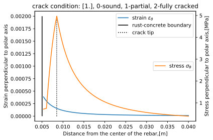
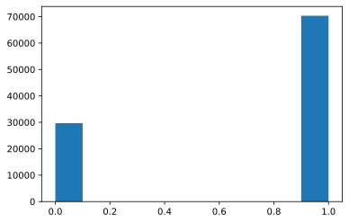
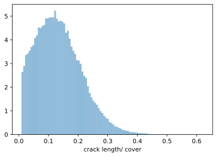

cracking model example¶
[39]:
%matplotlib inline
# %load_ext autoreload
# %autoreload 2
import helper_func as hf
from cracking import Cracking_Model
[40]:
# raw data
class Param: pass
raw_pars = Param()
# material properties
r0_bar_mean = 5e-3 # rebar diameter [m]
f_t_mean=5. # concrete ultimate tensile strength[MPa]
E_0_mean=32e3 # concrete modulus of elesticity [Mpa]
x_loss_mean = 12.5e-6*0.6 # rebar section loss, mean [m]
cover_mean = 4e-2 # cover thickness, mean [m]
raw_pars.r0_bar = Normal_custom(r0_bar_mean, 0.1*r0_bar_mean, non_negative=True)
raw_pars.x_loss = Normal_custom(x_loss_mean, 0.1*x_loss_mean, non_negative=True) # or from the corrosion model solution
raw_pars.cover = Normal_custom(cover_mean, 0.1*cover_mean, non_negative=True)
raw_pars.f_t = Normal_custom(f_t_mean, 0.1*f_t_mean, non_negative=True)
raw_pars.E_0 = Normal_custom(E_0_mean, 0.1*E_0_mean, non_negative=True)
raw_pars.w_c = Normal_custom(0.5, 0.1*0.6, non_negative=True)
raw_pars.r_v = Beta_custom(2.96, 2.96*0.05, 3.3, 2.6) # rust volumetric expansion rate 2.96 lower 2.6 upper: 3.3
[41]:
# initialize model
model_crack = Cracking_Model(raw_pars)
# run model in deterministic mode to check the stress and strain diagram
model_crack.run(stochastic=False)
deterministic
/Users/gangli/Local Documents/Mitacs project local/Tinkrete/modules/cracking.py:256: RuntimeWarning: invalid value encountered in greater_equal
sol = solve_stress_strain_crack_stochastic(self.pars) # no plot
/Users/gangli/Local Documents/Mitacs project local/Tinkrete/modules/cracking.py:257: RuntimeWarning: invalid value encountered in less_equal
else:
/Users/gangli/Local Documents/Mitacs project local/Tinkrete/modules/cracking.py:273: RuntimeWarning: invalid value encountered in less
/Users/gangli/Local Documents/Mitacs project local/Tinkrete/modules/cracking.py:70: RuntimeWarning: invalid value encountered in less_equal
return sigma_theta
/Users/gangli/Local Documents/Mitacs project local/Tinkrete/modules/cracking.py:73: RuntimeWarning: invalid value encountered in greater
def crack_width_open(a, b, u_st, f_t, E_0):
/Users/gangli/Local Documents/Mitacs project local/Tinkrete/modules/cracking.py:73: RuntimeWarning: invalid value encountered in less_equal
def crack_width_open(a, b, u_st, f_t, E_0):
/Users/gangli/Local Documents/Mitacs project local/Tinkrete/modules/cracking.py:78: RuntimeWarning: invalid value encountered in greater
inner radius boundary of the rust (center of rebar to rust-concrete) [m]
/Users/gangli/Local Documents/Mitacs project local/Tinkrete/modules/cracking.py:78: RuntimeWarning: invalid value encountered in less_equal
inner radius boundary of the rust (center of rebar to rust-concrete) [m]

[42]:
# run model in stochastic mode
model_crack.run(stochastic=True)
model_crack.postproc()
print(model_crack.crack_visible_rate_count)
print(model_crack.R_c - model_crack.pars.r0_bar) #/ M.pars.cover
print(model_crack.pars.cover)
/Users/gangli/Local Documents/Mitacs project local/Tinkrete/modules/cracking.py:166: RuntimeWarning: divide by zero encountered in true_divide
/Users/gangli/Local Documents/Mitacs project local/Tinkrete/modules/cracking.py:168: RuntimeWarning: divide by zero encountered in true_divide
/Users/gangli/Local Documents/Mitacs project local/Tinkrete/modules/cracking.py:256: RuntimeWarning: invalid value encountered in greater_equal
sol = solve_stress_strain_crack_stochastic(self.pars) # no plot
/Users/gangli/Local Documents/Mitacs project local/Tinkrete/modules/cracking.py:257: RuntimeWarning: invalid value encountered in less_equal
else:
/Users/gangli/Local Documents/Mitacs project local/Tinkrete/modules/cracking.py:267: RuntimeWarning: divide by zero encountered in true_divide
crack_length_over_cover[np.isnan(crack_length_over_cover)] = 0.0 # crack length=0 for no crack
/Users/gangli/Local Documents/Mitacs project local/Tinkrete/modules/cracking.py:273: RuntimeWarning: invalid value encountered in less
/Users/gangli/Local Documents/Mitacs project local/Tinkrete/modules/cracking.py:70: RuntimeWarning: invalid value encountered in less_equal
return sigma_theta
/Users/gangli/Local Documents/Mitacs project local/Tinkrete/modules/cracking.py:73: RuntimeWarning: invalid value encountered in greater
def crack_width_open(a, b, u_st, f_t, E_0):
/Users/gangli/Local Documents/Mitacs project local/Tinkrete/modules/cracking.py:73: RuntimeWarning: invalid value encountered in less_equal
def crack_width_open(a, b, u_st, f_t, E_0):
/Users/gangli/Local Documents/Mitacs project local/Tinkrete/modules/cracking.py:78: RuntimeWarning: invalid value encountered in greater
inner radius boundary of the rust (center of rebar to rust-concrete) [m]
/Users/gangli/Local Documents/Mitacs project local/Tinkrete/modules/cracking.py:78: RuntimeWarning: invalid value encountered in less_equal
inner radius boundary of the rust (center of rebar to rust-concrete) [m]
0.0
[0.01133316 0.00386504 nan ... 0.00987846 0.00390584 0.00404105]
[0.04600693 0.03706798 0.04092084 ... 0.04372599 0.03084513 0.03971957]
[43]:
plt.figure()
hf.Hist_custom(model_crack.crack_condition)
[43]:
(array([29667., 0., 0., 0., 0., 0., 0., 0.,
0., 70333.]),
array([0. , 0.1, 0.2, 0.3, 0.4, 0.5, 0.6, 0.7, 0.8, 0.9, 1. ]),
<a list of 10 Patch objects>)

[52]:
# histgram of the relative crack length though the cover
hf.Hist_custom(model_crack.crack_length_over_cover[model_crack.crack_length_over_cover != 0]) # eliminate the uncracked case
plt.xlabel('crack length/ cover')
[52]:
Text(0.5, 0, 'crack length/ cover')

[62]: